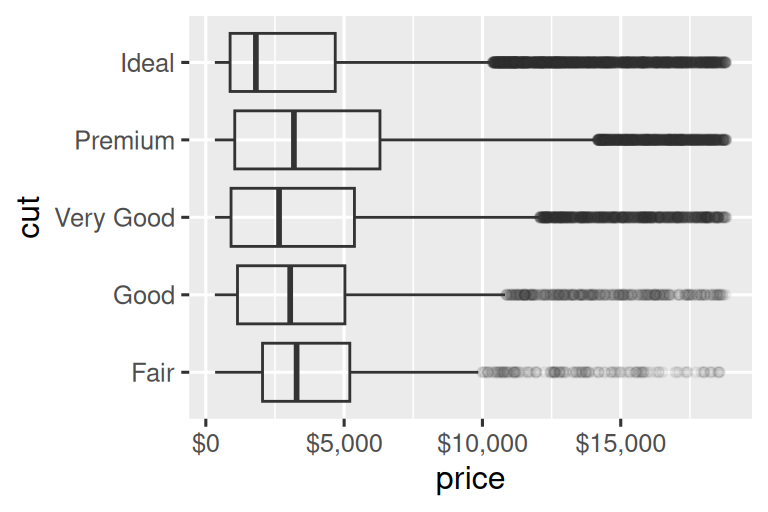

11 Comunicación
11.1 Introducción
En Capítulo 10, aprendió a usar gráficos como herramientas para exploración. Cuando hace gráficos exploratorios, sabe, incluso antes de mirar, qué variables mostrará el gráfico. Hiciste cada gráfica con un propósito, podías mirarla rápidamente y luego pasar a la siguiente gráfica. En el curso de la mayoría de los análisis, producirá decenas o cientos de gráficas, la mayoría de las cuales se desechan de inmediato.
Ahora que comprende sus datos, necesita comunicar su comprensión a los demás. Es probable que su audiencia no comparta su conocimiento previo y no esté profundamente interesado en los datos. Para ayudar a otros a construir rápidamente un buen modelo mental de los datos, deberá invertir un esfuerzo considerable para hacer que sus diagramas se expliquen por sí mismos tanto como sea posible. En este capítulo, aprenderá algunas de las herramientas que proporciona ggplot2 para hacerlo.
Este capítulo se centra en las herramientas que necesita para crear buenos gráficos. Suponemos que sabe lo que quiere y solo necesita saber cómo hacerlo. Por esa razón, recomendamos combinar este capítulo con un buen libro de visualización general. Nos gusta especialmente The Truthful Art, de Albert Cairo. No enseña la mecánica de crear visualizaciones, sino que se enfoca en lo que necesita pensar para crear gráficos efectivos.
11.1.1 Requisitos previos
En este capítulo, nos centraremos una vez más en ggplot2. También usaremos un poco de dplyr para la manipulación de datos, scales para anular las rupturas, etiquetas, transformaciones y paletas predeterminadas, y algunos paquetes de extensión de ggplot2, incluido ggrepel (https://ggrepel. slowkow.com) de Kamil Slowikowski y patchwork (https://patchwork.data-imaginist.com) por Thomas Lin Pedersen. No olvides que necesitarás instalar esos paquetes con install.packages() si aún no los tienes.
11.2 Etiquetas
El lugar más fácil para comenzar a convertir un gráfico exploratorio en un gráfico expositivo es con buenas etiquetas. Agregas etiquetas con la función labs().
ggplot(mpg, aes(x = displ, y = hwy)) +
geom_point(aes(color = class)) +
geom_smooth(se = FALSE) +
labs(
x = "Motor desplazamiento (L)",
y = "Economía de combustible en carretera (mpg)",
color = "Tipo de coche",
title = "Eficiencia de combustible generalmente disminuye con el tamaño del motor",
subtitle = "Dos plazas son una excepción debido a su peso ligero",
caption = "Datos de fueleconomy.gov"
)![Diagrama de dispersión de la eficiencia de combustible en carretera frente al tamaño del motor de los automóviles, donde los puntos se colorean según la clase de coche. Una curva suave siguiendo la trayectoria de la relación entre la eficiencia de combustible en carretera versus el tamaño del motor de los automóviles está superpuesto. El eje x está etiquetado como "Motor desplazamiento (L)" y el eje y está etiquetado como "Economía de combustible en carretera (mpg)". La leyenda está etiquetada como "Tipo de coche". La gráfica se titula "Eficiencia de combustible generalmente disminuye con el tamaño del motor". El subtítulo es "Dos plazas (automóviles deportivos) son una excepción debido a su peso ligero" y la descripción es "Datos de fueleconomy.gov".](communication_files/figure-html/unnamed-chunk-3-1.png)
El propósito del título de una trama es resumir el hallazgo principal. Evite títulos que solo describan cuál es la trama, p.ej., “Un diagrama de dispersión de la cilindrada del motor frente a la economía de combustible”.
Si necesita agregar más texto, hay otras dos etiquetas útiles: subtitle agrega detalles adicionales en una fuente más pequeña debajo del título y caption agrega texto en la parte inferior derecha de la trama, que a menudo se usa para describir la fuente del datos. También puede usar labs() para reemplazar los títulos de los ejes y las leyendas. Por lo general, es una buena idea reemplazar los nombres cortos de las variables con descripciones más detalladas e incluir las unidades.
Es posible usar ecuaciones matemáticas en lugar de cadenas de texto. Simplemente cambia "" por quote() y lee acerca de las opciones disponibles en ?plotmath:
df <- tibble(
x = 1:10,
y = cumsum(x^2)
)
ggplot(df, aes(x, y)) +
geom_point() +
labs(
x = quote(x[i]),
y = quote(sum(x[i] ^ 2, i == 1, n))
)11.2.1 Ejercicios
Cree un gráfico en los datos de economía de combustible con etiquetas personalizadas de
título,subtítulo,título,x,yycolor.-
Vuelva a crear la siguiente gráfica usando los datos de economía de combustible. Tenga en cuenta que tanto los colores como las formas de los puntos varían según el tipo de transmisión.
Tome un gráfico exploratorio que haya creado en el último mes y agregue títulos informativos para que sea más fácil de entender para otros.
11.3 Anotaciones
Además de etiquetar los componentes principales de su gráfico, suele ser útil etiquetar observaciones individuales o grupos de observaciones. La primera herramienta que tienes a tu disposición es geom_text(). geom_text() es similar a geom_point(), pero tiene una estética adicional: label. Esto hace posible agregar etiquetas textuales a sus gráficas.
Hay dos posibles fuentes de etiquetas. Primero, es posible que tenga un tibble que proporcione etiquetas. En la siguiente gráfica, sacamos los autos con el tamaño de motor más alto en cada tipo de unidad y guardamos su información como un nuevo data frames llamado label_info.
label_info <- mpg |>
group_by(drv) |>
arrange(desc(displ)) |>
slice_head(n = 1) |>
mutate(
drive_type = case_when(
drv == "f" ~ "front-wheel drive",
drv == "r" ~ "rear-wheel drive",
drv == "4" ~ "4-wheel drive"
)
) |>
select(displ, hwy, drv, drive_type)
label_info
#> # A tibble: 3 × 4
#> # Groups: drv [3]
#> displ hwy drv drive_type
#> <dbl> <int> <chr> <chr>
#> 1 6.5 17 4 4-wheel drive
#> 2 5.3 25 f front-wheel drive
#> 3 7 24 r rear-wheel driveLuego, usamos este nuevo data frame para etiquetar directamente los tres grupos para reemplazar la leyenda con etiquetas colocadas directamente en la gráfica. Usando los argumentos fontface y size podemos personalizar el aspecto de las etiquetas de texto. Son más grandes que el resto del texto de la gráfica y están en negrita. (theme(legend.position = "none") desactiva todas las leyenda — hablaremos de ello más adelante).
ggplot(mpg, aes(x = displ, y = hwy, color = drv)) +
geom_point(alpha = 0.3) +
geom_smooth(se = FALSE) +
geom_text(
data = label_info,
aes(x = displ, y = hwy, label = drive_type),
fontface = "bold", size = 5, hjust = "right", vjust = "bottom"
) +
theme(legend.position = "none")
#> `geom_smooth()` using method = 'loess' and formula = 'y ~ x'Tenga en cuenta el uso de hjust (justificación horizontal) y vjust (justificación vertical) para controlar la alineación de la etiqueta. Podemos usar la función geom_label_repel() del paquete ggrepel para solucionar ambos problemas. Este útil paquete ajustará automáticamente las etiquetas para que no se superpongan:
ggplot(mpg, aes(x = displ, y = hwy, color = drv)) +
geom_point(alpha = 0.3) +
geom_smooth(se = FALSE) +
geom_label_repel(
data = label_info,
aes(x = displ, y = hwy, label = drive_type),
fontface = "bold", size = 5, nudge_y = 2
) +
theme(legend.position = "none")
#> `geom_smooth()` using method = 'loess' and formula = 'y ~ x'También puede usar la misma idea para resaltar ciertos puntos en un diagrama con geom_text_repel() del paquete ggrepel. Tenga en cuenta otra técnica útil utilizada aquí: agregamos una segunda capa de puntos grandes y huecos para resaltar aún más los puntos etiquetados.
potential_outliers <- mpg |>
filter(hwy > 40 | (hwy > 20 & displ > 5))
ggplot(mpg, aes(x = displ, y = hwy)) +
geom_point() +
geom_text_repel(data = potential_outliers, aes(label = model)) +
geom_point(data = potential_outliers, color = "red") +
geom_point(
data = potential_outliers,
color = "red", size = 3, shape = "circle open")
Recuerde, además de geom_text() y geom_label(), tiene muchos otros geoms en ggplot2 disponibles para ayudar a anotar su gráfico. Un par de ideas:
Use
geom_hline()ygeom_vline()para agregar líneas de referencia. A menudo los hacemos gruesos (linewidth = 2) y blancos (color = white), y los dibujamos debajo de la capa de datos principal. Eso los hace fáciles de ver, sin desviar la atención de los datos.Usa
geom_rect()para dibujar un rectángulo alrededor de los puntos de interés. Los límites del rectángulo están definidos por la estéticaxmin,xmax,ymin,ymax. Alternativamente, consulte el paquete ggforce, específicamentegeom_mark_hull(), que le permite anotar subconjuntos de puntos con cascos.Usa
geom_segment()con el argumentoarrowpara llamar la atención sobre un punto con una flecha. Use la estéticaxeypara definir la ubicación inicial, yxendyyendpara definir la ubicación final.
Otra función útil para agregar anotaciones a los gráficos es annotate(). Como regla general, los geoms son generalmente útiles para resaltar un subconjunto de datos, mientras que annotate() es útil para agregar uno o algunos elementos de anotación a una gráfica.
Para demostrar el uso de annotate(), creemos un texto para agregar a nuestra trama. El texto es un poco largo, por lo que usaremos stringr::str_wrap() para agregar automáticamente saltos de línea dado el número de caracteres que desea por línea:
trend_text <- "Los tamaños de motor más grandes tienden a tener menor economía de combustible." |>
str_wrap(width = 30)
trend_text
#> [1] "Los tamaños de motor más\ngrandes tienden a tener menor\neconomía de combustible."Luego, agregamos dos capas de anotación: una con una etiqueta geom y la otra con un segmento geom. La estética x e y en ambos definen dónde debe comenzar la anotación, y la estética xend y yend en la anotación del segmento definen la ubicación final del segmento. Tenga en cuenta también que el segmento tiene el estilo de una flecha.
ggplot(mpg, aes(x = displ, y = hwy)) +
geom_point() +
annotate(
geom = "label", x = 3.5, y = 38,
label = trend_text,
hjust = "left", color = "red"
) +
annotate(
geom = "segment",
x = 3, y = 35, xend = 5, yend = 25, color = "red",
arrow = arrow(type = "closed")
)La anotación es una herramienta poderosa para comunicar los puntos principales y las características interesantes de sus visualizaciones. ¡El único límite es su imaginación (y su paciencia con las anotaciones de posicionamiento para que sean estéticamente agradables)!
11.3.1 Ejercicios
Usa
geom_text()con infinitas posiciones para colocar texto en las cuatro esquinas del gráfico.Use
annotate()para agregar un punto geom en el medio de su último gráfico sin tener que crear un tibble. Personaliza la forma, el tamaño o el color del punto.¿Cómo interactúan las etiquetas con
geom_text()con las facetas? ¿Cómo se puede agregar una etiqueta a una sola faceta? ¿Cómo se puede poner una etiqueta diferente en cada faceta? (Sugerencia: piense en el conjunto de datos que se pasa ageom_text().).¿Qué argumentos de
geom_label()controlan la apariencia del cuadro de fondo?¿Cuáles son los cuatro argumentos de
arrow()? ¿Cómo trabajan? Cree una serie de diagramas que demuestren las opciones más importantes.
11.4 Escalas
La tercera forma en que puede mejorar su gráfica para la comunicación es ajustar las escalas. Las escalas controlan cómo los mapeos estéticos se manifiestan visualmente.
11.4.1 Escalas predeterminadas
Normalmente, ggplot2 agrega escalas automáticamente. Por ejemplo, cuando escribe:
ggplot(mpg, aes(x = displ, y = hwy)) +
geom_point(aes(color = class))ggplot2 agrega automáticamente escalas predeterminadas detrás de escena:
ggplot(mpg, aes(x = displ, y = hwy)) +
geom_point(aes(color = class)) +
scale_x_continuous() +
scale_y_continuous() +
scale_color_discrete()Tenga en cuenta el esquema de nombres para las escalas: scale_ seguido del nombre de la estética, luego _, luego el nombre de la escala. Las escalas predeterminadas se nombran según el tipo de variable con la que se alinean: continuous, discrete, datetime, o date. scale_x_continuous() coloca los valores numéricos de displ en una recta numérica continua en el eje x, scale_color_discrete() elige colores para cada una de las clases de automóviles, etc. Hay muchas escalas no predeterminadas que aprenderá a continuación.
Las escalas predeterminadas se eligieron cuidadosamente para hacer un buen trabajo con una amplia gama de entradas. Sin embargo, es posible que desee anular los valores predeterminados por dos razones:
Es posible que desee modificar algunos de los parámetros de la escala predeterminada. Esto le permite hacer cosas como cambiar las pausas en los ejes o las etiquetas de las teclas en la leyenda.
Es posible que desee reemplazar la escala por completo y usar un algoritmo completamente diferente. A menudo, puede hacerlo mejor que el predeterminado porque sabe más sobre los datos.
11.4.2 Marcas de eje y teclas de leyenda
En conjunto, los ejes y las leyendas se denominan guías. Los ejes se utilizan para la estética x e y; las leyendas se usan para todo lo demás.
Hay dos argumentos principales que afectan la apariencia de las marcas en los ejes y las teclas en la leyenda: breaks y labels. Con breaks controla la posición de los ticks o los valores asociados con las teclas. Con labels controla la etiqueta de texto asociada con cada marca/tecla. El uso más común de breaks es anular la opción predeterminada:
ggplot(mpg, aes(x = displ, y = hwy, color = drv)) +
geom_point() +
scale_y_continuous(breaks = seq(15, 40, by = 5))Puede usar labels de la misma manera (un vector de caracteres de la misma longitud que breaks), pero también puede establecerlo en NULL para suprimir las etiquetas por completo. Esto puede ser útil para mapas o para publicar gráficas donde no puede compartir los números absolutos. También puede usar breaks y labels para controlar la apariencia de las leyendas. Para escalas discretas para variables categóricas, las etiquetas, labels, pueden ser una lista con nombre de los nombres de los niveles existentes y las etiquetas deseadas para ellos.
ggplot(mpg, aes(x = displ, y = hwy, color = drv)) +
geom_point() +
scale_x_continuous(labels = NULL) +
scale_y_continuous(labels = NULL) +
scale_color_discrete(labels = c("4" = "4 ruedas", "f" = "delantera", "r" = "trasera"))El argumento labels junto con las funciones de etiquetado del paquete scales también es útil para formatear números como moneda, porcentaje, etc. El gráfico de la izquierda muestra el etiquetado predeterminado con label_dollar(), que agrega un signo de dólar y una coma separadora de mil. El gráfico de la derecha agrega más personalización al dividir los valores en dólares por 1000 y agregar un sufijo “K” (para “miles”), además de agregar cortes personalizados. Tenga en cuenta que las rupturas (breaks) están en la escala original de los datos.
# Izquierda
ggplot(diamonds, aes(x = price, y = cut)) +
geom_boxplot(alpha = 0.05) +
scale_x_continuous(labels = label_dollar())
# Derecha
ggplot(diamonds, aes(x = price, y = cut)) +
geom_boxplot(alpha = 0.05) +
scale_x_continuous(
labels = label_dollar(scale = 1/1000, suffix = "K"),
breaks = seq(1000, 19000, by = 6000)
)
Otra función de etiqueta útil es label_percent():
ggplot(diamonds, aes(x = cut, fill = clarity)) +
geom_bar(position = "fill") +
scale_y_continuous(name = "Porcentaje", labels = label_percent())Otro uso de las rupturas (breaks) es cuando tiene relativamente pocos puntos de datos y desea resaltar exactamente dónde ocurren las observaciones. Por ejemplo, tome esta gráfica que muestra cuándo comenzó y terminó su mandato cada presidente de EE. UU.
presidential |>
mutate(id = 33 + row_number()) |>
ggplot(aes(x = start, y = id)) +
geom_point() +
geom_segment(aes(xend = end, yend = id)) +
scale_x_date(name = NULL, breaks = presidential$start, date_labels = "'%y")Tenga en cuenta que para el argumento breaks sacamos la variable start como un vector con presidential$start porque no podemos hacer un mapeo estético para este argumento. También tenga en cuenta que la especificación de rupturas y etiquetas para las escalas de fecha y hora es un poco diferente:
date_labelstoma una especificación de formato, de la misma forma queparse_datetime().date_breaks(no se muestra aquí), toma una cadena como “2 días” o “1 mes”.
11.4.3 Diseño de leyenda
La mayoría de las veces usará breaks y labels para ajustar los ejes. Si bien ambos también funcionan para leyendas, hay algunas otras técnicas que es más probable que uses.
Para controlar la posición general de la leyenda, debe usar una configuración theme(). Volveremos a los temas al final del capítulo, pero en resumen, controlan las partes de la gráfica que no son datos. La configuración del tema legend.position controla dónde se dibuja la leyenda:
base <- ggplot(mpg, aes(x = displ, y = hwy)) +
geom_point(aes(color = class))
base + theme(legend.position = "right") # por defecto
base + theme(legend.position = "left")
base +
theme(legend.position = "top") +
guides(color = guide_legend(nrow = 3))
base +
theme(legend.position = "bottom") +
guides(color = guide_legend(nrow = 3))Si su diagrama es corto y ancho, coloque la leyenda en la parte superior o inferior, y si es alto y angosto, coloque la leyenda a la izquierda o a la derecha. También puede usar legend.position = "none" para suprimir la visualización de la leyenda por completo.
Para controlar la visualización de leyendas individuales, use guides() junto con guide_legend() o guide_colorbar(). El siguiente ejemplo muestra dos configuraciones importantes: controlar el número de filas que usa la leyenda con nrow y anular una de las estéticas para agrandar los puntos. Esto es particularmente útil si ha usado un alpha bajo para mostrar muchos puntos en un gráfico.
ggplot(mpg, aes(x = displ, y = hwy)) +
geom_point(aes(color = class)) +
geom_smooth(se = FALSE) +
theme(legend.position = "bottom") +
guides(color = guide_legend(nrow = 2, override.aes = list(size = 4)))
#> `geom_smooth()` using method = 'loess' and formula = 'y ~ x'Tenga en cuenta que el nombre del argumento en guides() coincide con el nombre de la estética, al igual que en labs().
11.4.4 Sustitución de una escala
En lugar de simplemente ajustar un poco los detalles, puede reemplazar la escala por completo. Hay dos tipos de escalas que probablemente querrá cambiar: escalas de posición continua y escalas de color. Afortunadamente, los mismos principios se aplican a todas las demás estéticas, por lo que una vez que haya dominado la posición y el color, podrá elegir rápidamente otros reemplazos de escala.
Es muy útil para trazar transformaciones de su variable. Por ejemplo, es más fácil ver la relación precisa entre quilate,carat, y precio, price, si le aplicamos una transformación logarítmica:
# Izquierda
ggplot(diamonds, aes(x = carat, y = price)) +
geom_bin2d()
# Derecha
ggplot(diamonds, aes(x = log10(carat), y = log10(price))) +
geom_bin2d()Sin embargo, la desventaja de esta transformación es que los ejes ahora están etiquetados con los valores transformados, lo que dificulta la interpretación del gráfico. En lugar de hacer la transformación en el mapeo estético, podemos hacerlo con la escala. Esto es visualmente idéntico, excepto que los ejes están etiquetados en la escala de datos original.
ggplot(diamonds, aes(x = carat, y = price)) +
geom_bin2d() +
scale_x_log10() +
scale_y_log10()Otra escala que se personaliza con frecuencia es el color. La escala categórica predeterminada selecciona colores que están espaciados uniformemente alrededor de la rueda de colores. Las alternativas útiles son las escalas ColorBrewer que se han ajustado a mano para que funcionen mejor para las personas con tipos comunes de daltonismo. Los dos gráficos a continuación se ven similares, pero hay suficiente diferencia en los tonos de rojo y verde para que los puntos de la derecha puedan ser distinguidos incluso por personas con daltonismo rojo-verde.1
ggplot(mpg, aes(x = displ, y = hwy)) +
geom_point(aes(color = drv))
ggplot(mpg, aes(x = displ, y = hwy)) +
geom_point(aes(color = drv)) +
scale_color_brewer(palette = "Set1")No olvides las técnicas más simples para mejorar la accesibilidad. Si solo hay unos pocos colores, puede agregar un mapeo de forma redundante. Esto también ayudará a garantizar que su gráfica sea interpretable en blanco y negro.
ggplot(mpg, aes(x = displ, y = hwy)) +
geom_point(aes(color = drv, shape = drv)) +
scale_color_brewer(palette = "Set1")Las escalas ColorBrewer están documentadas en línea en https://colorbrewer2.org/ y están disponibles en R a través del paquete RColorBrewer, de Erich Neuwirth. Figura 11.1 muestra la lista completa de todas las paletas. Las paletas secuencial (superior) y divergente (inferior) son particularmente útiles si sus valores categóricos están ordenados o tienen un “medio”. Esto suele ocurrir si ha utilizado cut() para convertir una variable continua en una variable categórica.
Cuando tenga un mapeo predefinido entre valores y colores, use scale_color_manual(). Por ejemplo, si mapeamos el partido presidencial al color, queremos usar el mapeo estándar de rojo para los republicanos y azul para los demócratas. Un enfoque para asignar estos colores es usar códigos de color hexadecimales:
presidential |>
mutate(id = 33 + row_number()) |>
ggplot(aes(x = start, y = id, color = party)) +
geom_point() +
geom_segment(aes(xend = end, yend = id)) +
scale_color_manual(values = c(Republican = "#E81B23", Democratic = "#00AEF3"))Para el color continuo, puede utilizar scale_color_gradient() o scale_fill_gradient() integrados. Si tiene una escala divergente, puede usar scale_color_gradient2(). Eso te permite dar, por ejemplo, valores positivos y negativos de diferentes colores. A veces, eso también es útil si desea distinguir puntos por encima o por debajo de la media.
Otra opción es utilizar las escalas de color de viridis. Los diseñadores, Nathaniel Smith y Stéfan van der Walt, diseñaron cuidadosamente esquemas de color continuos que son perceptibles para las personas con diversas formas de daltonismo, así como perceptivamente uniformes tanto en color como en blanco y negro. Estas escalas están disponibles como paletas continuas (c), discretas (d) y agrupadas (b) en ggplot2.
df <- tibble(
x = rnorm(10000),
y = rnorm(10000)
)
ggplot(df, aes(x, y)) +
geom_hex() +
coord_fixed() +
labs(title = "Default, continuous", x = NULL, y = NULL)
ggplot(df, aes(x, y)) +
geom_hex() +
coord_fixed() +
scale_fill_viridis_c() +
labs(title = "Viridis, continuous", x = NULL, y = NULL)
ggplot(df, aes(x, y)) +
geom_hex() +
coord_fixed() +
scale_fill_viridis_b() +
labs(title = "Viridis, binned", x = NULL, y = NULL)Tenga en cuenta que todas las escalas de color vienen en dos variedades: scale_color_*() y scale_fill_*() para la estética color y fill respectivamente (las escalas de color están disponibles en la ortografía del Reino Unido y EE. UU.).
11.4.5 Zoom
Hay tres formas de controlar los límites de la gráfica:
- Ajustar qué datos se trazan.
- Fijación de los límites en cada escala.
- Configuración de
xlimyylimencoord_cartesian().
Demostraremos estas opciones en una serie de gráficos. La gráfica de la izquierda muestra la relación entre el tamaño del motor y la eficiencia del combustible, coloreada por tipo de tren de transmisión. El gráfico de la derecha muestra las mismas variables, pero subconjuntos de los datos que se trazan. La creación de subconjuntos de datos ha afectado las escalas x e y, así como la curva suave.
# Izquierda
ggplot(mpg, aes(x = displ, y = hwy)) +
geom_point(aes(color = drv)) +
geom_smooth()
# Derecha
mpg |>
filter(displ >= 5 & displ <= 6 & hwy >= 10 & hwy <= 25) |>
ggplot(aes(x = displ, y = hwy)) +
geom_point(aes(color = drv)) +
geom_smooth()

Comparemos esto con los dos gráficos a continuación, donde el gráfico de la izquierda establece los límites, limits, en las escalas individuales y el gráfico de la derecha los establece en coord_cartesian(). Podemos ver que reducir los límites es equivalente a dividir los datos en subconjuntos. Por lo tanto, para ampliar una región de la gráfica, generalmente es mejor usar coord_cartesian().
# Left
ggplot(mpg, aes(x = displ, y = hwy)) +
geom_point(aes(color = drv)) +
geom_smooth() +
scale_x_continuous(limits = c(5, 6)) +
scale_y_continuous(limits = c(10, 25))
# Right
ggplot(mpg, aes(x = displ, y = hwy)) +
geom_point(aes(color = drv)) +
geom_smooth() +
coord_cartesian(xlim = c(5, 6), ylim = c(10, 25))Por otro lado, establecer los límites, limits en escalas individuales generalmente es más útil si desea expandir los límites, por ejemplo, para hacer coincidir las escalas en diferentes gráficos. Por ejemplo, si extraemos dos clases de autos y los representamos por separado, es difícil comparar los gráficos porque las tres escalas (el eje X, el eje Y y la estética del color) tienen rangos diferentes.
suv <- mpg |> filter(class == "suv")
compact <- mpg |> filter(class == "compact")
# Izquierda
ggplot(suv, aes(x = displ, y = hwy, color = drv)) +
geom_point()
# Derecha
ggplot(compact, aes(x = displ, y = hwy, color = drv)) +
geom_point()![A la izquierda, un diagrama de dispersión del kilometraje en carretera frente al desplazamiento de los SUV. A la derecha, un diagrama de dispersión de las mismas variables para autos compactos. Los puntos están coloreados por tipo de unidad para ambos gráficos. Entre los SUV, la mayoría de los automóviles son de tracción en las cuatro ruedas y los demás son de tracción trasera, mientras que entre los automóviles compactos, la mayoría de los automóviles son de tracción delantera y los demás son de tracción en las cuatro ruedas. El gráfico de los SUV muestra una clara relación negativa entre el kilometraje en carretera y el desplazamiento, mientras que en el gráfico de los coches compactos la relación es mucho más uniforme.](communication_files/figure-html/unnamed-chunk-30-1.png)
![A la izquierda, un diagrama de dispersión del kilometraje en carretera frente al desplazamiento de los SUV. A la derecha, un diagrama de dispersión de las mismas variables para autos compactos. Los puntos están coloreados por tipo de unidad para ambos gráficos. Entre los SUV, la mayoría de los automóviles son de tracción en las cuatro ruedas y los demás son de tracción trasera, mientras que entre los automóviles compactos, la mayoría de los automóviles son de tracción delantera y los demás son de tracción en las cuatro ruedas. El gráfico de los SUV muestra una clara relación negativa entre el kilometraje en carretera y el desplazamiento, mientras que en el gráfico de los coches compactos la relación es mucho más uniforme.](communication_files/figure-html/unnamed-chunk-30-2.png)
Una forma de superar este problema es compartir escalas en varias gráficas, entrenando las escalas con los “límites” de los datos completos.
x_scale <- scale_x_continuous(limits = range(mpg$displ))
y_scale <- scale_y_continuous(limits = range(mpg$hwy))
col_scale <- scale_color_discrete(limits = unique(mpg$drv))
# Izquierda
ggplot(suv, aes(x = displ, y = hwy, color = drv)) +
geom_point() +
x_scale +
y_scale +
col_scale
# Derecha
ggplot(compact, aes(x = displ, y = hwy, color = drv)) +
geom_point() +
x_scale +
y_scale +
col_scale![A la izquierda, un diagrama de dispersión del kilometraje en carretera frente al desplazamiento de los SUV. A la derecha, un diagrama de dispersión de las mismas variables para autos compactos. Los puntos están coloreados por tipo de unidad para ambos gráficos. Ambos gráficos se trazan en la misma escala para el kilometraje en carretera, el desplazamiento y el tipo de conducción, lo que da como resultado que la leyenda muestre los tres tipos (tracción delantera, trasera y en las 4 ruedas) para ambos gráficos, aunque no hay SUV con tracción delantera. y sin coches compactos de tracción trasera. Dado que las escalas x e y son las mismas y van mucho más allá del desplazamiento y el kilometraje en carretera mínimo o máximo, los puntos no ocupan toda el área de trazado.](communication_files/figure-html/unnamed-chunk-31-1.png)
![A la izquierda, un diagrama de dispersión del kilometraje en carretera frente al desplazamiento de los SUV. A la derecha, un diagrama de dispersión de las mismas variables para autos compactos. Los puntos están coloreados por tipo de unidad para ambos gráficos. Ambos gráficos se trazan en la misma escala para el kilometraje en carretera, el desplazamiento y el tipo de conducción, lo que da como resultado que la leyenda muestre los tres tipos (tracción delantera, trasera y en las 4 ruedas) para ambos gráficos, aunque no hay SUV con tracción delantera. y sin coches compactos de tracción trasera. Dado que las escalas x e y son las mismas y van mucho más allá del desplazamiento y el kilometraje en carretera mínimo o máximo, los puntos no ocupan toda el área de trazado.](communication_files/figure-html/unnamed-chunk-31-2.png)
En este caso particular, podría haber utilizado simplemente facetas, pero esta técnica es útil de manera más general, si por ejemplo, desea distribuir gráficos en varias páginas de un informe.
11.4.6 Ejercicios
-
¿Por qué el siguiente código no anula la escala predeterminada?
df <- tibble( x = rnorm(10000), y = rnorm(10000) ) ggplot(df, aes(x, y)) + geom_hex() + scale_color_gradient(low = "white", high = "red") + coord_fixed() ¿Cuál es el primer argumento de cada escala? ¿Cómo se compara con
labs()?-
Cambie la visualización de los términos presidenciales por:
- Combinando las dos variantes que personalizan los colores y las separaciones del eje x.
- Mejorando la visualización del eje y.
- Etiquetar cada término con el nombre del presidente.
- Adición de etiquetas de gráfica informativas.
- Colocar descansos cada 4 años (¡es más complicado de lo que parece!).
-
Primero, crea la siguiente gráfica. Luego, modifique el código usando
override.aespara que la leyenda sea más fácil de ver.ggplot(diamonds, aes(x = carat, y = price)) + geom_point(aes(color = cut), alpha = 1/20)
11.5 Temas
Finalmente, puede personalizar los elementos que no son datos de su gráfico con un tema:
ggplot(mpg, aes(x = displ, y = hwy)) +
geom_point(aes(color = class)) +
geom_smooth(se = FALSE) +
theme_bw()ggplot2 incluye los ocho temas que se muestran en Figura 11.2, con theme_gray() como predeterminado.2 Muchos más están incluidos en paquetes complementarios como ggthemes (https://jrnold.github.io/ggthemes), de Jeffrey Arnold. También puede crear sus propios temas, si está tratando de hacer coincidir un estilo corporativo o de revista en particular.

También es posible controlar los componentes individuales de cada tema, como el tamaño y el color de la fuente utilizada para el eje y. Ya hemos visto que legend.position controla dónde se dibuja la leyenda. Hay muchos otros aspectos de la leyenda que se pueden personalizar con theme(). Por ejemplo, en el siguiente gráfico, cambiamos la dirección de la leyenda y le ponemos un borde negro alrededor. Tenga en cuenta que la personalización del cuadro de leyenda y los elementos del título de la trama del tema se realizan con las funciones element_*(). Estas funciones especifican el estilo de los componentes que no son datos, por ejemplo, el texto del título está en negrita en el argumento face de element_text() y el color del borde de la leyenda está definido en el argumento color de element_rect(). Los elementos del tema que controlan la posición del título y la leyenda son plot.title.position y plot.caption.position, respectivamente. En el gráfico siguiente, estos se establecen en "plot" para indicar que estos elementos están alineados con toda el área del gráfico, en lugar del panel de gráfico (el valor predeterminado). Se utilizan algunos otros componentes de theme() útiles para cambiar la ubicación del formato del título y el texto del subtítulo.
ggplot(mpg, aes(x = displ, y = hwy, color = drv)) +
geom_point() +
labs(
title = "Los tamaños de motor más grandes tienden a tener una menor economía de combustible",
caption = "Source: https://fueleconomy.gov."
) +
theme(
legend.position = c(0.6, 0.7),
legend.direction = "horizontal",
legend.box.background = element_rect(color = "black"),
plot.title = element_text(face = "bold"),
plot.title.position = "plot",
plot.caption.position = "plot",
plot.caption = element_text(hjust = 0)
)
#> Warning: A numeric `legend.position` argument in `theme()` was deprecated in ggplot2
#> 3.5.0.
#> ℹ Please use the `legend.position.inside` argument of `theme()` instead.Para obtener una descripción general de todos los componentes theme(), consulte la ayuda con ?theme. El libro de ggplot2 también es un excelente lugar para consultar todos los detalles sobre temas.
11.5.1 Ejercicios
- Elija un tema ofrecido por el paquete ggthemes y aplíquelo a la última gráfica que hizo.
- Haz que las etiquetas de los ejes de tu gráfico sean azules y en negrita.
11.6 Disposición
Hasta ahora hablamos sobre cómo crear y modificar una sola gráfica. ¿Qué sucede si tiene varias gráficas que desea diseñar de cierta manera? El paquete patchwork le permite combinar gráficas separadas en el mismo gráfico. Cargamos este paquete anteriormente en el capítulo.
Para colocar dos gráficas una al lado de la otra, simplemente puede agregarlas una a la otra. Tenga en cuenta que primero debe crear los gráficos y guardarlos como objetos (en el siguiente ejemplo, se denominan p1 y p2). Luego, los colocas uno al lado del otro con +.
p1 <- ggplot(mpg, aes(x = displ, y = hwy)) +
geom_point() +
labs(title = "Gráfica 1")
p2 <- ggplot(mpg, aes(x = drv, y = hwy)) +
geom_boxplot() +
labs(title = "Gráfica 2")
p1 + p2
Es importante tener en cuenta que en el fragmento de código anterior no usamos una nueva función del paquete patchwork. En cambio, el paquete agregó una nueva funcionalidad al operador +.
También puede crear diseños de trama complejos con patchwork. A continuación, | coloca p1 y p3 uno al lado del otro y / mueve p2 a la siguiente línea.
p3 <- ggplot(mpg, aes(x = cty, y = hwy)) +
geom_point() +
labs(title = "Gráfica 3")
(p1 | p3) / p2
Además, patchwork le permite recopilar leyendas de varias gráficas en una leyenda común, personalizar la ubicación de la leyenda y las dimensiones de las gráficas, y agregar un título, subtítulo, descripción, etc. común a sus gráficas. A continuación creamos 5 parcelas. Desactivamos las leyendas en los diagramas de caja y el diagrama de dispersión y recopilamos las leyendas para los diagramas de densidad en la parte superior del diagrama con & theme(legend.position = "top"). Tenga en cuenta el uso del operador & aquí en lugar del habitual +. Esto se debe a que estamos modificando el tema de la gráfica de retazos en lugar de las ggplots individuales. La leyenda se coloca en la parte superior, dentro de guide_area(). Finalmente, también hemos personalizado las alturas de los diversos componentes de nuestro mosaico: la guía tiene una altura de 1, los diagramas de caja 3, los diagramas de densidad 2 y el diagrama de dispersión facetado 4. Patchwork divide el área que ha asignado para su gráfica utilizando esta escala y coloca los componentes en consecuencia.
p1 <- ggplot(mpg, aes(x = drv, y = cty, color = drv)) +
geom_boxplot(show.legend = FALSE) +
labs(title = "Gráfica 1")
p2 <- ggplot(mpg, aes(x = drv, y = hwy, color = drv)) +
geom_boxplot(show.legend = FALSE) +
labs(title = "Gráfica 2")
p3 <- ggplot(mpg, aes(x = cty, color = drv, fill = drv)) +
geom_density(alpha = 0.5) +
labs(title = "Gráfica 3")
p4 <- ggplot(mpg, aes(x = hwy, color = drv, fill = drv)) +
geom_density(alpha = 0.5) +
labs(title = "Gráfica 4")
p5 <- ggplot(mpg, aes(x = cty, y = hwy, color = drv)) +
geom_point(show.legend = FALSE) +
facet_wrap(~drv) +
labs(title = "Plot 5")
(guide_area() / (p1 + p2) / (p3 + p4) / p5) +
plot_annotation(
title = "Kilometraje en ciudad y carretera para automóviles con diferentes trenes de transmisión",
caption = "Fuente: https://fueleconomy.gov"
) +
plot_layout(
guides = "collect",
heights = c(1, 3, 2, 4)
) &
theme(legend.position = "top")![Cinco gráficas distribuidas de manera que las dos primeras gráficas estén una al lado de la otra. gráficas tres y cuatro están debajo de ellos. Y la quinta gráfica se extiende debajo de ellos. El gráfico fragmentado se titula "Kilometraje en ciudad y carretera para automóviles con diferentes trenes de transmisión" y cuya descripción es "Fuente: https://fueleconomy.gov". Los primeros dos diagramas son diagramas de caja uno al lado del otro. Las gráficas 3 y 4 son densidad gráficas Y el quinto diagrama es un diagrama de dispersión facetado. Cada uno de estos gráficos muestra geoms coloreados por tren de transmisión, pero la gráfica de retazos solo tiene una leyenda eso se aplica a todos ellos, arriba de las gráficas y debajo del título.](communication_files/figure-html/unnamed-chunk-39-1.png)
Si desea obtener más información sobre la combinación y el diseño de varias gráficas con patchwork, le recomendamos consultar las guías en el sitio web del paquete: https://patchwork.data-imaginist.com.
11.6.1 Ejercicios
-
¿Qué sucede si omite los paréntesis en el siguiente diseño de gráfico? ¿Puedes explicar por qué sucede esto?
p1 <- ggplot(mpg, aes(x = displ, y = hwy)) + geom_point() + labs(title = "Plot 1") p2 <- ggplot(mpg, aes(x = drv, y = hwy)) + geom_boxplot() + labs(title = "Plot 2") p3 <- ggplot(mpg, aes(x = cty, y = hwy)) + geom_point() + labs(title = "Plot 3") (p1 | p2) / p3 -
Usando las tres gráficas del ejercicio anterior, recrea el siguiente mosaico.
![Tres gráficas: La gráfica 1 es una gráfica de dispersión del kilometraje en carretera versus el tamaño del motor. La gráfica 2 son gráficas de caja una al lado de la otra del kilometraje de la carretera versus el tren de transmisión. La gráfica 3 son gráficas de caja una al lado de la otra del kilometraje de la ciudad versus el tren de transmisión. Las gráficas 1 están en la primera fila. Las gráficas 2 y 3 están en la siguiente fila, cada tramo la mitad del ancho de la gráfica 1. La gráfica 1 está etiquetada como "Fig. A", la gráfica 2 está etiquetada "Fig. B", y la gráfica 3 está etiquetada como "Fig. C".](communication_files/figure-html/unnamed-chunk-41-1.png)
11.7 Resumen
En este capítulo, aprendió a agregar etiquetas de trazado, como título, subtítulo, leyenda, así como a modificar etiquetas de eje predeterminadas, usar anotaciones para agregar texto informativo a su trazado o resaltar puntos de datos específicos, personalizar las escalas de los ejes y cambiar el tema de su gráfica. También aprendió a combinar varios gráficos en un solo gráfico usando diseños de gráficos simples y complejos.
Si bien hasta ahora ha aprendido cómo crear muchos tipos diferentes de gráficos y cómo personalizarlos usando una variedad de técnicas, apenas hemos arañado la superficie de lo que puede crear con ggplot2. Si desea obtener una comprensión completa de ggplot2, le recomendamos leer el libro, ggplot2: Elegant Graphics for Data Analysis. Otros recursos útiles son el R Graphics Cookbook de Winston Chang y Fundamentals of Data Visualization de Claus Wilke.
puede usar una herramienta como SimDaltonism para simular el daltonismo para probar estas imágenes.↩︎
muchas personas se preguntan por qué el tema predeterminado tiene un fondo gris. Esta fue una elección deliberada porque presenta los datos sin dejar de hacer visibles las líneas de la cuadrícula. Las líneas de cuadrícula blancas son visibles (lo cual es importante porque ayudan significativamente a los juicios de posición), pero tienen poco impacto visual y podemos ignorarlas fácilmente. El fondo gris le da a la trama un color tipográfico similar al del texto, asegurando que los gráficos encajen con el flujo de un documento sin sobresalir con un fondo blanco brillante. Finalmente, el fondo gris crea un campo continuo de color que asegura que la trama se perciba como una sola entidad visual.↩︎